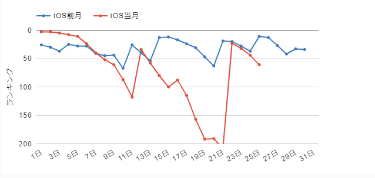

今井リサの弟問題に関する理屈と感情
目次
バンドリの今井リサの弟問題について、かなり混乱したので整理の意味も込めて書き記します。
ソシャゲのシナリオがユーザの凸によって捻じ曲げられたという、事態の表面しか見ていない言説があまりにも多く、しかし反論する側も感情的になりすぎていて頭を抱えるような状況なので、努めて冷静に、この事態について説明します。
今井リサの弟事件とは
2019/10/11（金） 15:00に公開されたバンドリゲーム内イベント Do It Ourselves!! のシナリオテキストにおいて、メインキャラクター今井リサに弟が存在することが突如明かされたことにより、プレイヤー及びその周囲の人々に混乱がもたらされた事件のこと。
特にRoselia、リサゆき推しのプレイヤーたちへの影響は深刻で、当日のtwitterタイムラインは阿鼻叫喚の様相を呈していました。
イベント終了後の10/21（月）に公式からその弟の設定について変更する旨が周知され、油を注がれた火が一気に燃え広がりました。
ここでは今回の事件の混乱と、その原因、対応についてまとめます。
前提
まず、以下の前提をご承知おきください。
- プレイヤーは大なり小なり混乱した人が多かった（と筆者は観測している）が、必ずしも否定的な意見ばかりではなかった
- 弟設定に否定的な意見を持ちつつ、設定変更には更に否定的な立場を取るプレイヤーもそれなりに見受けられた
- 他のコンテンツでどうこう、という話には意味がないのでここでは取り扱わない
三行まとめ
- 2年半影も形もなかった今井リサの弟が不自然な形で登場したため、多くのプレイヤーが混乱した
- 今井リサに弟がいるという事実については（狭いスコープにおいては）文脈含め、テキスト上の矛盾は存在しない
- 公式はここで設定を明かしたことがミスであったと判断し、修正を決定した
どんな弟か
ピックアップリサの左エピソード1で、昔一緒にジグソーパズルで遊んでいたという言及があります。
単純作業にのめり込むリサに対して、弟は飽きてやめてしまったという対比があるため、リサとあまり性格は似ていないのかもしれません。
この「昔」という表現が曲者で、高校生くらいの若者になると数年前レベルの出来事も「昔」と表現できてしまいます。
そのことから一緒にジグソーパズルを遊べる弟の年齢を推定すると、0～10歳差くらいの幅があり2、年が近いのか離れているのかすらわかりません。
なぜプレイヤーがこんなにも混乱したか
まず、アプリとしてバンドリ！ガールズバンドパーティ！がリリースされたのは2017年3月16日3です。
昨今のコンテンツ消費スピードから鑑みて、2年半継続しているというのはかなり息の長いコンテンツであるということを前提として共有しておかねばなりません。
そして、その2年半かけて積み重ねられてきたシナリオを、熱心なファンはきっちり読み込んでいます。
これまで影も形もなかった今井リサの弟が突如出てきたことの驚きは、想像に難くないでしょう。
突然出てきた彼女の弟の設定は、以下の理由で不自然なのです。
- 過去の彼女の言動で、Roseliaの会話の中ですら一度も存在が出てきていない
- なおかつ、マフラーを編んであげるくらいの距離感ではある
- リサの人格形成の材料として描かれたエピソードは細かいものを除けばほとんど湊友希那由来である
1を考慮すると弟について全くの無関心なのではないかとも思えますが、2がある以上、そうとは言えません。
2年半かけて3と意識させるよう描写し続けてきたのに、このタイミングで彼女と親しい特定の人物を登場させる描写をしてきたのは物語として自然ではないように思います。
筆者はこの原因を、設定開示のタイミングを逸したせいではないかと考えています。詳しくは後述します。
矛盾？
公式のお知らせには以下のようにあります。
「バンドリ！ ガールズバンドパーティ！」の世界において、「今井リサ」自身がRoseliaや他のバンドメンバーと過ごしていく中でも、これまで「今井リサ」の弟の存在をほのめかす言動がなかったため、リリースからお客さまにお届けしてきたストーリーと今回のイベントストーリーにおける「今井リサ」の言動に矛盾が発生し、お客さまを混乱させてしまいました。
公式のお知らせより抜粋
つまり、「お姉さんっぽい今井リサというキャラクターがこれまで一切存在をほのめかさなかった弟という存在に急に言及したこと」それ自体を矛盾としているようです。
リサ姉と呼ばれるくらいよく気が利く世話焼きな性格の理由付けに、「弟がいるから」という不純物が唐突に混じってしまったことを以て矛盾としたのでしょう。
矛盾ではなく理由の補強と捉える人がいるのも無理はなく、筆者としても矛盾という言葉の選び方には疑問があります。（とは言え、今歓迎されるべき設定でないと考えてはいます）
矛盾しない描写
なお、以下の点は、よく考えれば（疑問は残るものの）矛盾とは言い切れません。
今回の混乱の原因はこれまでのシナリオで培われてきた全体の状態と照らし合わせたときに浮かび上がる不自然さによるものであって、特定のイベントを単体で見たときに矛盾を発見できる類のものではありません。
真夏のサンライト エピソード「優しい瞳」におけるセリフ
「昔から近所の年下の子と遊んだりしてると、自然と面倒を見る係になってたからねー」
リサのセリフ
小さい子供の扱いに慣れている理由の説明です。
今井リサのキャラクターとしての大きな特徴の一つに、面倒見の良さがあります。
彼女の性格から言って、弟の面倒を見ていた時期もあっただろうに、ここで弟に言及されないのは何故でしょうか。
ざっくり言って二通りの理由が考えられます。
A. さほど年が離れておらず、面倒を見る必要がなかった
B. 年は離れているが、手がかからないほどしっかりした弟だった
Aは十分有り得そうな話です。昔一緒にジグソーパズルをしていて、弟が飽きてからもリサ一人で完成させてしまったという言及があります。
いかに単純作業にのめり込むリサとは言え、それで周りが見えなくなる性格とは考えにくく、したがって弟は割と放置しても問題ないほど年が近かった、という説には説得力がありそうです。
Bに関しては判断の材料がありませんが、これもありえない話ではなさそうです。
むしろ、手のかからない弟がいた分、他にお姉ちゃん力を発揮するようになっていた、とも解釈できます。
リサゆき的にはあんまりおいしくない解釈ではありますが。
ファン第１号 エピソード「ズバーンの秘密 前篇」におけるセリフ
「うーん、おねーちゃんって大変なんだねえ」
リサのセリフ
ひまりから巴のメールを見せられ、妹のために奮闘する巴の様子を想像してのセリフ。
このセリフだけ見ると他人事のように聞こえます。とても弟がいるお姉ちゃんのセリフには聞こえません。
しかしながら、表記が「おねーちゃん」であるということと文脈から、あこの姉（＝巴）を指す言葉と解釈できます。
妹（＝あこ）に憧れられるお姉ちゃん（＝巴）って大変だね、という意味であれば、彼女自身に弟がいないことをほのめかすセリフではなくなります。
リサの弟が手のかからない相手であったとすればなおさら、他人事のようになってしまうのは仕方がないのでしょう。
氷川姉妹の問題への対応がない
重い双子姉妹4のすれ違い問題への対応が全くできていない。弟がいるのに不自然だとする声もあるようですが、姉妹と姉弟の関係ではあまり参考にならないと判断したのでしょう。
ただ、紗夜が爆発する直前のシーンに「アタシには妹いないからなぁ……」発言があり、人によっては、二人に近い立場にいる同じ姉なのにアクションを起こさないことを冷たく感じることもあるかもしれません。
妹だったら騒がれてなかったの？
こちらの場合はもっと深刻です。
Roseliaのバンドストーリー１章１１話でリサは自分に妹がいないことを明言していますので、明確な矛盾になります。
また、氷川姉妹の問題に対してアクションを起こせなかった事実がより深刻になります。
沙綾と取り違えた説
リサと見た目が似ていて、なおかつ弟が公式にいることになっている山吹沙綾と取り違えてしまった説も言われていました。
筆者も最初はこれではないかと疑いました。
ただし、公式発表を信じるとすれば、これはなさそうです。
松原花音の弟との差は？
実は、2019年1月のイベントで追加された星2花音ちゃんの左エピソードでも、突如弟が出現しています。
これもそこそこ衝撃が大きかったようですが、これまで描写されてきた花音自身のアイデンティティやその基盤への影響がさほど大きく捉えられなかったためか、今回ほどの騒ぎにはなっていません。
今井リサの弟という存在に烈火のごとく拒否反応を示したプレイヤーが一定数いたのは、リサのアイデンティティの基盤を揺るがしかねないものであったからです。
なぜ今まで明かされなかったのか
筆者は、今井リサに弟がいる設定を開示するタイミングを逸したことが今回の混乱の原因ではないかと考えています。
では、なぜ今までこの設定が開示されなかったのでしょう。
リサ以外に、明確に弟がいることがわかっているキャラクターは沙綾、花音、美咲の3人です。
これら3人のうち誰かとリサの両方が登場するイベントは2019/10/11まで星に願う短冊5とfull bloom party6のみ。
花音以外とイベントで一緒に登場していないのです。
そして、前者において花音とリサは同時に登場しません。後者は一緒に登場するシーンもありますが、ほぼ彩と花音がメインでガッツリした絡みはなし。
つまり、弟持ちとイベントでガッツリ絡むのは今回が初7です。そういった意味で、弟に言及しやすい最初のイベントだったのかもしれません。
矛盾はないけど不自然？
今井リサの弟の存在と個々のイベントストーリーのテキストそのものに明確な矛盾点は確認できておらず、しかし、広い範囲で見たときにリサの人格形成におけるある種の不自然さがあります。
姉っぽいことと、姉であることとの間には天と地ほどの隔たりがあります。
後者の事実は前者を補強することもありますが、描写次第ではエモさの最大化に対する邪魔にもなり得ます。
今回のケースは少なくとも筆者にとっては明確に後者でした。
今井リサは姉っぽさを持ったキャラクターとして描写されてきましたが、弟妹の存在には触れられていませんでした。（妹に関しては否定すらされています）
今井リサの、姉っぽさを持つキャラクターを形成するための材料としては、主に湊友希那との関係性を用いて描写されてきました。2年半かけて。
そこに「実際に姉である」というファクターを追加してしまうのは蛇足も良いところで、物語としてそういう描き方をすることには著しい不自然さを感じます。
ここで言う姉っぽさ、すなわちよく気が利く世話焼きな性格と手際の良さは、Don’t leave me Lisa!!!!8にも描かれているように、彼女の根幹を成すとても重要な要素です。
その形成に関わるパーツは分散させるべきではなく、すでに湊友希那という非常に大きな存在がいた以上、更にもう一つ弟という目立つパーツを追加するのは蛇足であり、しかもリリースから2年半が経過した後にいきなり追加するというのは明らかに不自然です。
このことは海外のコミュニティでも言及されているようです。
[BREAKING] Imai Lisa has a little brother. Repeat, Imai Lisa actually has a little brother. She is knitting a scarf for her little brother.
It's exactly because Lisa is so maternal, that I find this sudden information irritating. "A good older sister" and "someone who would be a good older sister" are two different character traits to me. I always imagined Lisa as someone who is older sisterly despite of being an only child, and dotes on her friends because there is no one for her to dote on at home.
This is very different from the other girls' cases, Aya and the others having siblings is just fun trivia. But if Lisa really is so older sister-like because she has a younger brother, then it's a pretty important part of her characterization, just like Kokoro being rich or Chisato being a former child actress. They should have included that from the beginning and have her mention him occasionally.
If they wanted to give Lisa a younger brother, I would have prefered an event where Lisa finds out that her mom's pregnant and gets excited, but also anxious about becoming a real older sister, with her friends reassuring her.Aikami13の書き込み
リサが極めて母性的（注釈: よく気が利く面倒見の良い姉御肌な性格と手際の良さをこう表現している）であるからこそ、私はこの突然の情報開示に苛立っている。
「良い姉」と「良い姉たる資質の持ち主」は私にとって異なる二つの性格付けである。
私は常にリサを一人っ子でありながらも良い姉たる資質を持った人物で、その愛情を向ける相手が家にいないがために友人にそれを向けているのだと想像していた。
他の子と明確に違うところは、彩や他のキャラクターの兄弟の情報はファン向けの些細な情報に過ぎないということだ。
しかし、もし本当に弟がいたことを理由にリサが姉らしい性格をしているとすると、こころがお金持ちである、千聖が元子役女優であるといった要素と同じく、それは彼女の性格付けにおいてあまりにも重要な部分だ。
彼ら（注釈: 公式シナリオの提供者、すなわちクラフトエッグ）は初期からその設定を描写し、リサに時折彼（注釈: 弟）の存在に言及させておくべきだった。
もしリサに弟がいる設定を作りたいのであれば、リサが彼女の母親の妊娠に気づいてテンションを上げつつ、本当の姉になることへの不安を抱え、友人がそれを心配するといった内容のイベントストーリーが必要だ。NPlasmaによる翻訳
不自然ではあるが悪意あるものではない
不自然ではありますが、個々のイベントでの文脈を含むテキスト面での整合性だけを考えたとき、彼女に弟がいることに一切の矛盾はありません。
初期の設定で弟が存在し、その設定をライターが参照して、このイベントで公開したという公式の経緯説明にも、間違いはないことでしょう。
積み重なったシナリオの中で、初期にあった設定を活かし続けるべきかどうか、公開すべきかどうかを判断することはとても難しいことと思います。
１週間ちょっとでイベントを締め切って次のイベント、という凄まじい現実のゲームスピード9の中では、正確な判断を下すことも難しいでしょう。
これを間違ってしまったとして、あまり強く非難はできないように思います。
プログラムで言えば、これまでの処理で生じた副作用の積み重ねによって形成されたグローバルスコープの状態に対して不自然な処理（ただし、ユニットテストは通っている）をしてしまったためにバグが生じたようなものです。
プログラムは本来、グローバルへの副作用を極力なくして保守性をよくしないといけないものですが、長く続くコンテンツとそのキャラクターに対しては、同じ手法が取れるケースのほうが少ない10です。
公式の対応
今回は、かなり深いコンテキストにおいて、公式シナリオが一つ間違いをしてしまいました。
このコンテキストの深さは熱心に作品を追い続けているファンでもなければ到底わかるものでなく、また熱心なファンでも本質を捉え、的確に表現するのが難しい内容です。
修正を行うべきかどうかについても、おそらく相当の議論が交わされたことでしょう。
結果として修正されることは決定したようです。お知らせでは矛盾と断言してしまっていますが、詳細な内容を記していないのは、その内容が極めて抽象的で、具体的なテキストとしての矛盾ではなかったからでしょう。
修正自体が正解であるかどうかは、わかりません。
声の大きいクレームでキャラクターが捻じ曲げられたことになりはしないか、という意見もあります。
その懸念は修正が発表されるよりずっと以前からありました。弟の存在に否定的でありながらも、修正に対してより否定的な意見があったのもそのためです。
ストーリーやキャラクターに関する綿密な整合性を売りにしているコンテンツである以上、その綻びに対する修正は仕方がないのかもしれません。
修正するしないどちらを選択しても既に大きなダメージが出てしまっている以上、より軽微な損害で済むほうを選択したということでしょう。
シナリオが積み重なれば積み重なるほど、粗は出やすくなります。
二度と同じことが起きないとは言い切れませんが、公式のお知らせ内容を見るに、二度と起こさない決意を以て仕事をしていただけるようです。
全シナリオチェックは工数がかかりすぎるとしても、定期的に不要な設定の棚卸しをするなどして、運用上の再発防止策は講じてくれることでしょう。
今回は私もひどく混乱してしまいましたが、可能な限り冷静に、けれど思い切り楽しんでバンドリを追いかけていきたいものです。
対応の理由（2019/10/25追記）
未だにユーザが騒いだので公式が折れた、などとする言説があったので、そこにはちょっと待てよという主張を追記しておきます。
企業の判断の基準は基本的に数字です。大量のクレームを送り付けられたからと言って、それだけを理由に重要な判断を下すことはありません。
なぜかと言うと、大量に送られてきたクレームが本当にお金を落としてくれる顧客の声であるとは限らないからです。
ではここで、バンドリ！ ガールズバンドパーティ！の2019年10月のセールスランキングの推移11を見てみましょう。

問題の設定が明かされた10/11にガクッと順位を落とし、それでもガチャ効果で上昇しようとしていたところ木谷取締役の的はずれな失言12もあってか、どんどんと下落。
修正を発表した21日には、とうとう200位圏内から脱落してしまっています。
修正の発表に踏み切った理由として外部から観測できるものとしては、これがもっとも有力なものでしょう。
基本的にガチャ更新のタイミングで上がり、徐々に下がる挙動をしているところはいつもどおりですが、前月比で見てもわかる通り、200位圏外への転落は相当な下がり幅です。
これを無視できる変化でないと判断して修正に踏み切った、とする見方は自然であるように思います。無論、正解であるかはまだ判断がつきません13が。
つまり、公式が修正に踏み切った理由は単にユーザが騒いだからではなく、お金を落としてくれるユーザへの影響が大きいと判断したためである14と推測できます。
結果としてみればユーザが変えさせたという主張は間違いではないでしょうが、それは風が吹いたから桶屋が儲かったというように、間の文脈を全く無視した乱暴な理解であると言えるでしょう。
事態の重要な文脈を無視したままの暴論で誰かを攻撃するのは、自らに都合の良い内容のみをあげつらう悪質なまとめサイトと何も変わらない行為であることを肝に銘じておいていただきたいのです。
- バンドリはカードごとにそのキャラクターに関するエピソードが二つ設定される。エピソード閲覧ボタンが画面左側に表示されるものを左エピソード、左エピなどと呼ぶ。
- 子ども用ジグソーパズルの対象年齢が5歳から、リサのいう「昔」を3年前と仮定すると、15歳と5歳で10歳差。だいたいここらがMAXだと思われる。
- 元となったコミックスや小説は設定からしてだいぶ変わった別物のため、ここでは詳細に触れない。
- 姉はリサと同じバンドのメンバーであり、妹はリサのクラスメイトでよく会話する友人。リサは言わば二人の共通の相談相手のような立場。
- 2017年6月末からのイベント。リサは氷川姉妹に対してちょっとしたお節介を焼く。
- 2019年3月末からのイベント。リサはマイペースな彩と花音を心配するも……。
- リサはDo It Ourselves!!における美咲との会話の中で初めて弟に言及している。
- 2017年6月下旬からのイベント。Roseliaにとってリサが必要であることをメンバーと彼女自身が認識する。
- 月に3本のペースでイベントをやっている。正気か？
- 副作用がなければこの類の青春物語として面白くないし不自然であることは言うまでもない。
- #セルラン分析/ゲーム株『Game-i』より引用。
- 10/13に新宿ロフトプラスワンで行われたアサルトリリィのイベントにおける発言。ファン層を無視し、その場にいた女性声優へのセクハラとも取れる発言、後日twitterでの釈明も的を外し、あまりにも見事なスリーアウトを披露している。
- 22日の大幅な上昇は、21日に開始した新イベントの影響と思われる。
- 10/25に行われたブシロードの株主総会では、2019年7月期のIPタイトル別の社内売上げランキングでバンドリがトップであることが発表されている。